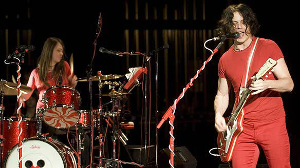

|  |
Home Biografia Discografia Integrantes |
Origem Detroit, Michigan
País Estados Unidos
Gênero Rock Alternativo
Atividade 1997 - 2011
O White Stripes se formou em Detroit, Michigan, em 1997. A dupla recebeu mais atenção após a saída repentina de Jack White, do grupo The Go, onde ele era o principal guitarrista. Jack descreveu seu Primeiro álbum, The White Stripes (1999), como "realmente furioso… o registro mais cru, o mais poderoso, e mais Detroit que já fizemos."[7] Seu Segundo álbum, De Stijl (2000), foi batizado assim em homenagem à vanguarda artística holandesa neoplasticista, que eles citaram como fonte da imagem musical deles. A arte desta vanguarda está presente na capa do álbum. Este trabalho também foi gravado em uma fita cassete, na sala de estar de Jack.[8] White Blood Cells e Elephant A dupla desfrutou de um significante sucesso no ano de 2001, com o lançamento de seu álbum White Blood Cells. O som, fortemente associado ao rock de garagem, atraiu muita atenção dos ingleses e, mais tarde, nos Estados Unidos, tornando o White Stripes uma das bandas mais aclamadas de 2002.[2] Ainda neste ano, a revista Q nomeou o White Stripes como uma das "50 Bandas Para Se Ver Antes de Morrer."[9] O álbum que sucedeu à White Blood Cells, chamado Elephant, foi lançado em 1º de abril de 2003, sendo bastante aclamado pela crítica e foi o maior sucesso comercial da dupla, atingindo o topo das paradas britânicas e figurando entre os 10 primeiros álbuns nos Estados Unidos. Ele foi gravado com Liam Watson no Toe Rag Studios, em Londres. Durante a celebração de "50 anos de Rock and Roll", a revista Rolling Stone elegeu Elephant como o 390º melhor álbum de todos os tempos. Em agosto deste mesmo ano, a Rolling Stone ainda elegeu Jack White o 17º melhor guitarrista de todos os tempos, colocando-o entre Johnny Ramone e John Frusciante. Em dezembro de 2003, a NME elegeu este álbum como o melhor do ano.[10] O primeiro single do álbum, "Seven Nation Army", foi a canção da dupla que mais fez sucesso, e foi seguido de um cover de "I Just Don't Know What To Do With Myself", escrita por Burt Bacharach. O terceiro single do álbum foi "The Hardest Button To Button". Em 8 de fevereiro de 2004, o álbum ganhou o Grammy de Melhor Álbum de Música Alternativa, enquanto "Seven Nation Army" ganhou o Grammy de Melhor Música de Rock. Lançado em 2004, o filme Under Blackpool Lights foi filmado inteiramente com um filme de 16mm e foi dirigido por Dick Carruthers.